Hàng 2b · Bảng hàng thẻ điện thoại · Cổng Phạm vi · ảnh chính ở khổ 360, nền sáng, đã đăng nhập, cùng 60 căn mẫu
Bảng hàng trên điện thoại thành danh sách thẻ căn
Kết luận. Dưới 768 px Bảng hàng hiện thẻ căn thay cho bảng cuộn ngang; chạm thẻ mở hồ sơ căn toàn màn đã có, lùi về đúng chỗ đang cuộn. Từ 768 trở lên bảng giữ nguyên. Còn ba câu cần anh chọn: thẻ trông thế nào, lọc ở đâu, và việc ghim cột «Căn» làm ở đâu.
Hôm nay ở 360 (để so)
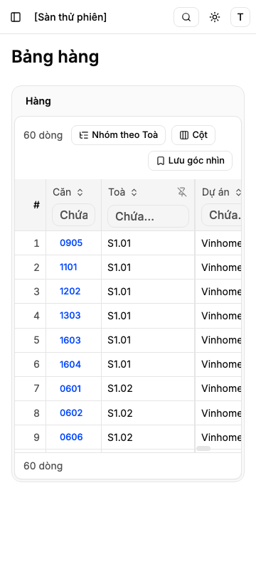
Câu 1 · Thẻ trông thế nào?
Khuyến nghị: A — thẻ căn của kho. Vì sao: kho đã có thẻ căn này ở đầu hồ sơ (gốc khối ReUI product-grid-4) và Quỹ hàng đã chọn đúng khối ấy cho bảng thẻ điện thoại; một nhu cầu một lời giải.
Lối khác: B — dòng gọn theo khối ReUI list-5.
A · Thẻ căn của kho (product-grid-4)
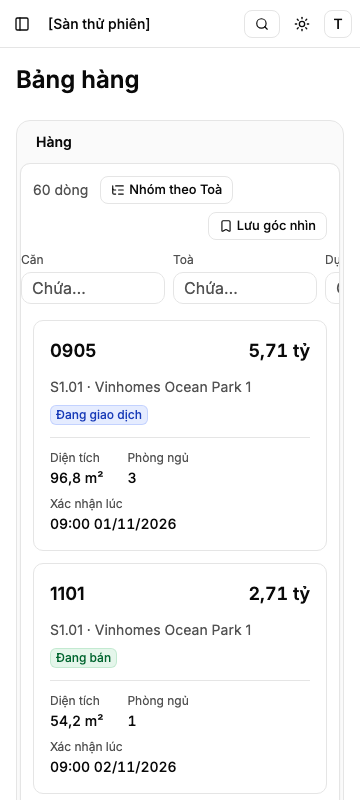
Được: đọc ngay mã căn, giá, nơi, trạng thái và diện tích, phòng ngủ, ngày xác nhận mà không phải mở hồ sơ. Mất: khoảng 2,5 căn mỗi màn, phải cuộn nhiều.
Khối gốc ReUI product-grid-4 (chụp trước khi dựng). Thẻ của kho đã chuyển từ khối này ở hàng 3: giữ dòng tên + giá và hàng ba thông số trên vạch mảnh; bỏ ảnh (kho chưa có ảnh căn), câu chuyện, tim.
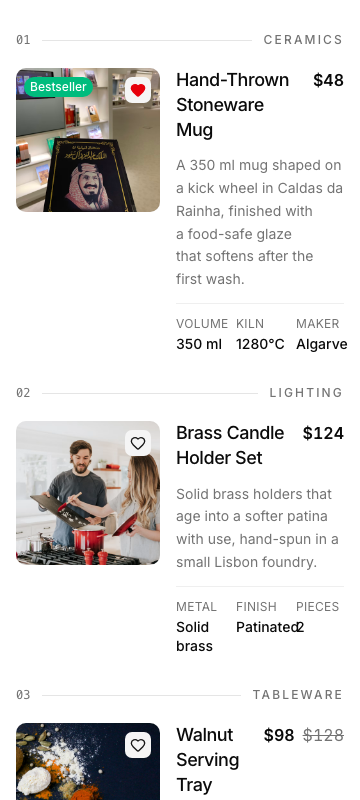
B · Dòng gọn (list-5)
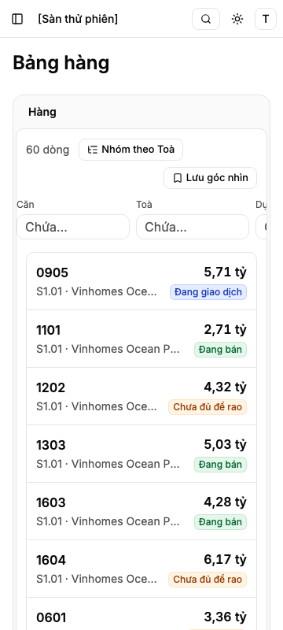
Được: khoảng 7 căn mỗi màn, lướt nhanh như danh bạ. Mất: không có diện tích, phòng ngủ trên thẻ; tên dự án bị cắt — muốn biết thêm phải mở hồ sơ.
Khối gốc ReUI list-5 (chụp trước khi dựng). Dựng theo hình, chưa phải mã khối: giữ dòng hai tầng trái và số tiền phải trong một khung chia vạch; bỏ ô biểu tượng màu; dòng phải thêm nhãn trạng thái.
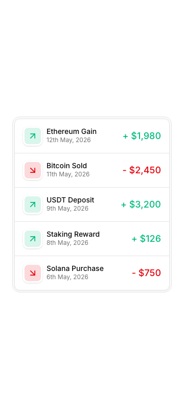
Cùng hai lối ở 414
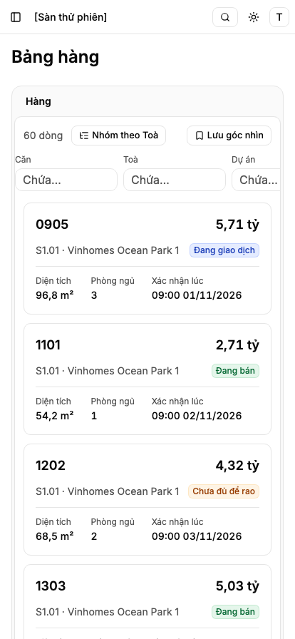
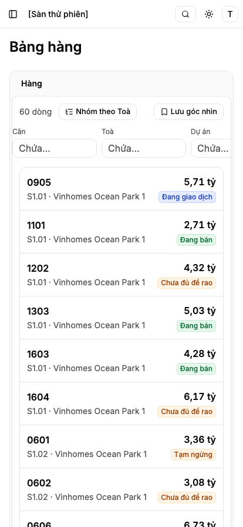
Câu 1: A
Câu 2 · Lọc trên điện thoại nằm ở đâu?
Khuyến nghị: L1 — hàng ô lọc luôn hiện, cuộn ngang, đúng các ô dưới tiêu đề cột của bảng. Vì sao: anh đã chốt ở hàng 2e «ô lọc luôn hiện ở mọi khổ, không nút bật tắt»; L1 giữ một luật cho mọi khổ.
Lối khác: L2 — nút «Lọc (n)» mở ngăn đáy đủ tám ô xếp dọc (khối ReUI filter-sidebar-5, cách Quỹ hàng làm). Chọn L2 là đổi luật của 2e riêng cho điện thoại.
Cả hai ảnh: lối A, đang lọc Trạng thái «Đang bán» (24/60 căn).
L1 · Hàng ô lọc luôn hiện
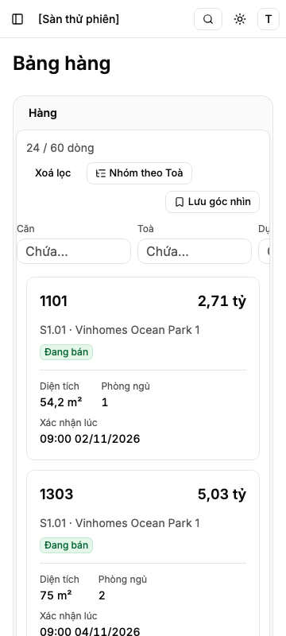
Được: gõ lọc ngay, không chạm thêm; giống bảng. Mất: ở 360 chỉ thấy hai ô (Căn, Toà); ô đang lọc ở cột khuất (Trạng thái) phải cuộn ngang mới thấy — chỉ «24 / 60 dòng» và «Xoá lọc» báo đang lọc.
L2 · Nút «Lọc (n)» mở ngăn đáy
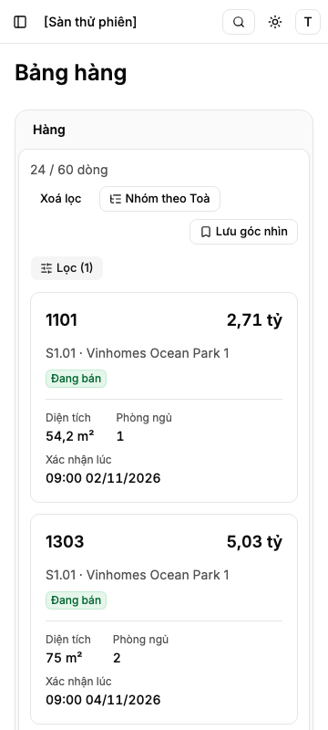
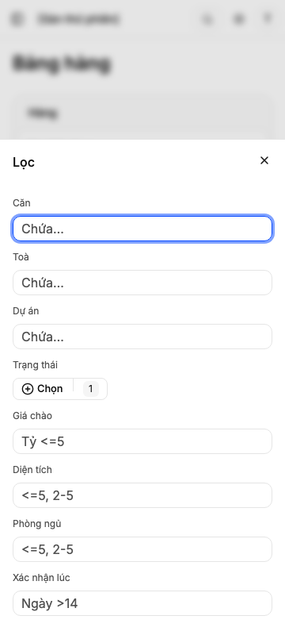
Được: thấy đủ tám ô và số ô đang lọc; danh sách thẻ có thêm chỗ. Mất: thêm một lần chạm mỗi lần lọc; khác với bảng trên máy tính.
Khối gốc ReUI filter-sidebar-5 (chụp trước khi dựng; dựng bằng ngăn đáy của kho, bỏ màu, cỡ, thanh trượt):
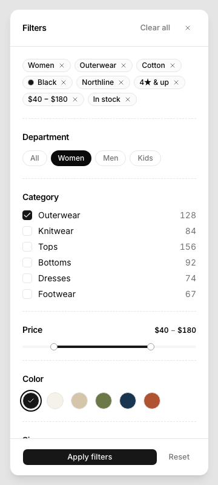
Câu 2: L1
Câu 3 · Khoá ghim cột «Căn» ở menu tiêu đề cột — làm ở đâu?
Việc gắn kèm từ hàng 2e: trên bảng máy tính, menu tiêu đề cột «Căn» vẫn cho bỏ ghim. Việc này ở bảng từ 768 trở lên, không chạm thẻ điện thoại.
Khuyến nghị: tách thành việc nhỏ riêng, làm sau khi 2b và 2d (Bảng hàng theo địa lý) đã gộp. Vì sao: khác khổ, khác việc; 2d đang sửa cùng vùng bảng.
Lối khác: làm trong hàng này — một PR, nhưng trộn việc bảng máy tính vào hàng điện thoại.
Câu 3: tách
Đã chốt (máy quyết theo luật đã có)
- Ngưỡng 768. Dưới 768 thẻ, từ 768 bảng — cùng ngưỡng với hồ sơ toàn màn và nút «Toàn màn hình». Có bài kiểm ở 767 và 768.
- Một vùng Lưới, không danh sách thứ hai. Lọc, nhóm theo Toà, góc nhìn, số dòng, trạng thái tải/trống/lỗi/không quyền là của vùng; xoay máy qua ngưỡng không mất lọc.
- Chạm thẻ mở hồ sơ căn đã có (hàng 3, 3e): toàn màn, «Trước/Sau» theo thứ tự thẻ, nút «Hỏi đầu chủ» ở đáy; lùi về giữ đúng chỗ cuộn và tiêu điểm ở thẻ vừa mở (đã thử trên bản bấm được).
- Không sửa trên thẻ — sửa giá, trạng thái trên điện thoại là hàng 3d. Nút «Cột» ẩn dưới 768. Tìm vẫn ở ô ⌘K.
- Nhóm theo Toà trên thẻ: dòng tên toà kèm số căn.

Rủi ro
- Dữ liệu mẫu của kho chỉ có mã căn bốn ký tự, giá 2,71–8,06 tỷ, không căn cho thuê, không căn thiếu giá. Ảnh trên dựng trên dữ liệu ấy, không vẽ thêm. Mã 14 ký tự, giá 125,5 tỷ, giá thuê, giá trống được đo bằng bài kiểm riêng ở 360 (tiêu chí AC-8).
- Phần dựng chạm vùng Lưới dùng chung (ngoài vùng của hàng), cùng chỗ hàng 2d sửa: giám sát xếp thứ tự gộp trước khi dựng.
Trở ngại công cụ
- Máy chủ ReUI của công cụ báo lỗi đăng nhập; ảnh khối gốc chụp từ trang xem trước công khai của ReUI. Không ảnh hưởng lời khuyên.
Trả lời
Câu 1: A · Câu 2: L1 · Câu 3: tách · hay sửa: ___